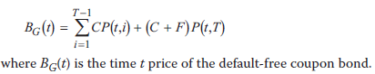

--------------------
衡量信用风险
--------------------
- 概念
- 违约概率 PD, probability of default
- 违约损失 LGD, loss given default
- 回收率 RR, RR = 1 - LGD
- 期望损失 EL = 违约损失 × 违约概率 = LGD × PD
- PVEL = Vrisk-free bond - Vrisky bond
- Vrisk-free bond = 100 / (1 + rf)
- Vrisky bond = 100 / (1 + rf + rrisk)
- 只考虑风险中性的情形下PVEL > EL
- 信用模型
- 传统模型: credit scoring 信用打分
- 对借款人的信用质量排序的方法, 直接打分不用百分比
- 不反映宏观经济所以不适合大型企业, 更适合私企
- 使用者要求模型稳定, 因而丧失部分准确性
- 不考虑相同借款人的不同借款之间的信用质量差别
- 传统模型: credit rating 信用评级
- 适用于大型企业, 政府债券, 资产担保债券ABS
- 指标简单直观, 容易理解, 信息收集成本低
- 降低债市波动
- 不能及时反映市场变化
- 不能随经济周期变化
- 利益冲突的可能
- structure models 结构化模型
- the option analogy
where K = strike price
- LGD = K-A
- valuation
- 假设
- 无摩擦市场, 无套利
- 无风险利率长期恒定
- ST满足对数正态分布, 均值μT, 方差σ2T
- 公司资产负债结构简单

- N(d2) = 不违约概率 Prob(AT≥K)
- credit risk measures
- 不违约概率
- 违约损失 EL = KN(–e2) – Ateu(T–t)N(–e1)
- PV(EL)
- 优点
- 用期权类比方式理解违约概率和LGD
- 用当前市场价格中隐含的参数, 不用历史参数
- 缺点
- BS表模型假设不准确
- 资产交易不活跃时不准确
- 不考虑经济周期
- reduced form models 简化模型
- 基本假设
- 公司零息债在无摩擦无套利市场交易
- 无风险利率和经济状况随机
- 违约率和回收率取决于经济周期
- 零息债价值
- 违约概率 prob(τ ≤ T) = 1 – e–λ(T–t)
- EL = K [1 – e–λγ(T–t)]
- PV(LGD) = K P(t,T) - D(t,T) = K P(t,T) [1 – e–λγ(T–t)]
- 优点
- 可用历史数据
- 信用风险随经济周期变化
- 不对BS表做假设
- 缺点
- 信用利差的term structure
- 无违约无摩擦无套利下的coupon bond价格

- 有风险的coupon bond 价格
- D(t,T) = Ke−yD(t,T)(T −t)
其中yD(t,T) = 有风险yield
- P(t,T) = e−yP(t,T)(T −t)
其中yP(t,T) = 无风险yield
- PV(EL)
= PVrisky - PVrisk-free
= yD(t,T) - yP(t,T)
= λγ
- ABS
- ABS 不用分析发债人, 仅分析抵押资产即可
- 可用两种模型, 但是要考虑还款顺序
- 不用违约概率, 可以用损失概率, 因为ABS不会违约, 但是抵押资产本身可能资不抵债导致违约损失
-
--------------------
--------------------
--------------------
Next Chaptor